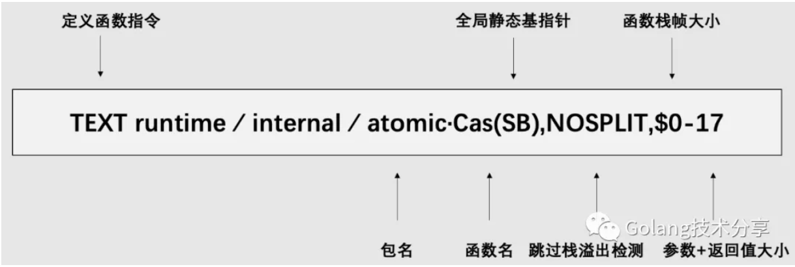
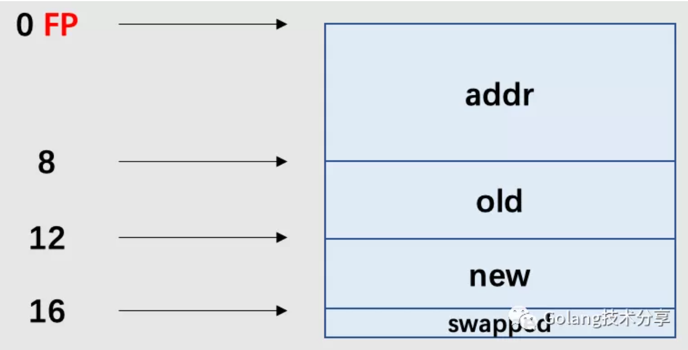

同步原语的基石
Go是一门以并发编程见长的语言，它提供了一系列的同步原语方便开发者使用，例如sync包下的Mutex、RWMutex、WaitGroup、Once、Cond，以及抽象层级更高的Channel。但是，它们的实现基石是原子操作。需要记住的是：软件原子操作离不开硬件指令的支持。本文拟通过探讨原子操作——比较并交换(compare and swap, CAS)的实现，来理解Go是如何借助硬件指令来实现这一过程的。
什么是CAS
看源码实现之前，我们先理解一下CAS。
维基百科定义：CAS是原子操作的一种，可用于在多线程编程中实现不被打断的数据交换操作，从而避免多线程同时改写某一数据时由于执行顺序不确定性以及中断的不可预知性产生的数据不一致问题。该操作通过将内存中的值与指定数据进行比较，当数值一样时将内存中的数据替换为新的值。
CAS的实现思想可以用以下伪代码表示
1 | 1bool Cas(int *val, int old, int new) |
在sync/atomic/doc.go中，定义了一系列原子操作函数原型。以CompareAndSwapInt32为例，有以下代码
1 | 1package main |
它的执行结果如下
1 | 1 $ go run main.go |
CAS能做什么
CAS从线程层面来说，它是非阻塞的，其乐观地认为在数据更新期间没有其他线程影响，因此也常常被称为是一种轻量级的乐观锁。它关注的是并发安全，而并非并发同步。
在文章开头时，我们就已经提到原子操作是实现上层同步原语的基石。以互斥锁为例，为了方便理解，我们在这里将它的状态定义为0和1，0代表目前该锁空闲，1代表已被加锁。那么，这个时候，CAS就是管理状态的最佳选择。以下是sync.Mutex中Lock方法的部分实现代码。
1 | 1func (m *Mutex) Lock() { |
在atomic.CompareAndSwapInt32(&m.state, 0, mutexLocked)中，m.state代表锁的状态，通过CAS函数，判断锁此时的状态是否空闲（m.state==0），是，则对其加锁（这里mutexLocked的值为1）。
源码解读
同样还是以CompareAndSwapInt32为例，它在sync/atomic/doc.go中定义的函数原型如下
1 | 1func CompareAndSwapInt32(addr *int32, old, new int32) (swapped bool) |
对应的汇编代码位于sync/atomic/asm.s中
1 | 1TEXT ·CompareAndSwapInt32(SB),NOSPLIT,$0 |
通过指令JMP，跳转到它的实际实现runtime∕internal∕atomic·Cas(SB)。这里需要注意的是，由于架构体系差异，其汇编实现也会存在差别。在本文，我们就以常见的amd64为例，因此进入runtime/internal/atomic/asm_amd64.s，汇编代码如下
1 | 1TEXT runtime∕internal∕atomic·Cas(SB),NOSPLIT,$0-17 |
Go的汇编是基于 Plan9 的，我想是因为Ken Thompson（他是Plan 9操作系统的核心成员）吧。如果你不熟悉Plan 9，看到这段汇编可能比较懵。小菜刀觉得没必要花过多时间去学懂，因为它很复杂且另类，同时涉及到很多硬件知识。不过如果只是要求看懂简单的汇编代码，稍微研究下还是能够做到的。
由于本文的重点并不是plan 9，所以这里就只解释上述汇编代码的含义。

atomic.Cas(SB)的函数原型为func CompareAndSwapInt32(addr *int32, old, new int32) (swapped bool)，其入参addr为8个字节（64位系统），old和new分别为4个字节，返回参数swapped为1个字节，所以17=8+4+4+1。
FP（Frame pointer: arguments and locals），它是伪寄存器，用来表示函数参数与局部变量。其通过symbol+offset(FP)的方式进行使用。在本函数中，我们可以把FP指向的内容表示为如下所示。

ptr+0(FP)代表的意思就是ptr从FP偏移0byte处取内容。AX，BX，CX在这里，知道它们是存放数据的寄存器即可。MOV X Y所做的操作是将X上的内容复制到Y上去，MOV后缀L表示“长字”（32位，4个字节），Q表示“四字”（64位，8个字节）。
1 | 1 MOVQ ptr+0(FP), BX // 第一个参数addr命名为ptr，放入BP(MOVQ，完成8个字节的复制) |
重点来了，LOCK指令。这里参考 Intel 的64位和IA-32架构开发手册
1 | 1Causes the processor’s LOCK# signal to be asserted during execution of the accompanying instruction (turns the instruction into an atomic instruction). In a multiprocessor environment, the LOCK# signal ensures that the processor has exclusive use of any shared memory while the signal is asserted. |
在多处理器环境中，指令前缀LOCK能够确保，在执行LOCK随后的指令时，处理器拥有对任何共享内存的独占使用。
LOCK：是一个指令前缀，其后必须跟一条“读-改-写”性质的指令，它们可以是ADD, ADC, AND, BTC, BTR, BTS, CMPXCHG, CMPXCH8B, CMPXCHG16B, DEC, INC, NEG, NOT, OR, SBB, SUB, XOR, XADD, XCHG。该指令是一种锁定协议，用于封锁总线，禁止其他 CPU 对内存的操作来保证原子性。
在汇编代码里给指令加上 LOCK 前缀，这是CPU 在硬件层面支持的原子操作。但这样的锁粒度太粗，其他无关的内存操作也会被阻塞，大幅降低系统性能，核数越多愈发显著。
为了提高性能，Intel 从 Pentium 486 开始引入了粒度较细的缓存锁：MESI协议（关于该协议，小菜刀在之前的文章《CPU缓存体系对Go程序的影响》有详细介绍过）。此时，尽管有LOCK前缀，但如果对应数据已经在 cache line里，也就不用锁定总线，仅锁住缓存行即可。
1 | 1 LOCK |
CMPXCHGL，L代表4个字节。该指令会把AX（累加器寄存器）中的内容（old）和第二个操作数（0(BX)）中的内容（ptr所指向的数据）比较。如果相等，则把第一个操作数（CX）中的内容（new）赋值给第二个操作数。
1 | 1 SETEQ ret+16(FP) |
SETEQ 与CMPXCHGL是配合使用的，如果CMPXCHGL中比较结果是相等的，则设置ret（即函数原型中的swapped）为1，不等则设置为0。RET代表函数返回。
总结
本文探讨了atomic.CompareAndSwapInt32是如何通过硬件指令LOCK实现原子性操作的封装。但要记住，在不同的架构平台，依赖的机器指令是不同的，本文仅研究的是amd64下的汇编实现。
在Go提供的原子操作库atomic中，除了CAS还有许多有用的原子方法，它们共同筑起了Go同步原语体系的基石。
1 | 1func SwapIntX(addr *intX, new intX) (old intX) |
那么它们是如何实现的？小菜刀将它们实现的关键指令总结如下。
- Swap :
XCHGQ - CAS :
LOCK+CMPXCHGQ - Add :
LOCK+XADDQ - Load :
MOVQ - Store :
XCHGQ - Pointer : 以上指令结合GC 调度
这里大家可能会好奇，Swap和Store会对共享数据做修改，但是为啥它们没有加LOCK，小菜刀对此也同样疑惑。好在 Intel 的64位和IA-32架构开发手册中给出了答案：
1 | 1If a memory operand is referenced, the processor’s locking protocol is automatically implemented for the duration of the exchange operation, regardless of the presence or absence of the LOCK prefix or of the value of the IOPL |
在实现Swap和Store方法时，其实不管是否存在LOCK前缀，在交换操作期间（XCHGQ）将自动实现CPU的锁定协议。
除此之外，在Load和Store/Swap的实现中，前者没有使用锁定协议，而后者需要。两者结合，那这不就是一种读共享，写独占的思想吗？